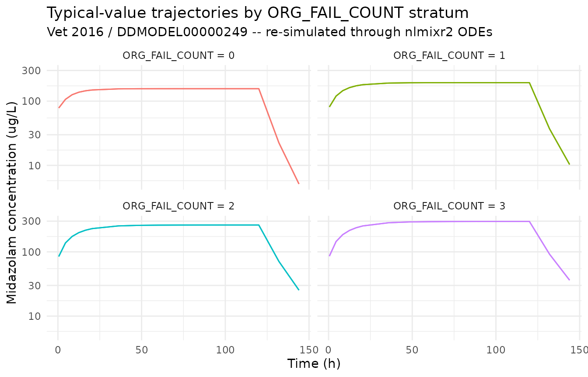
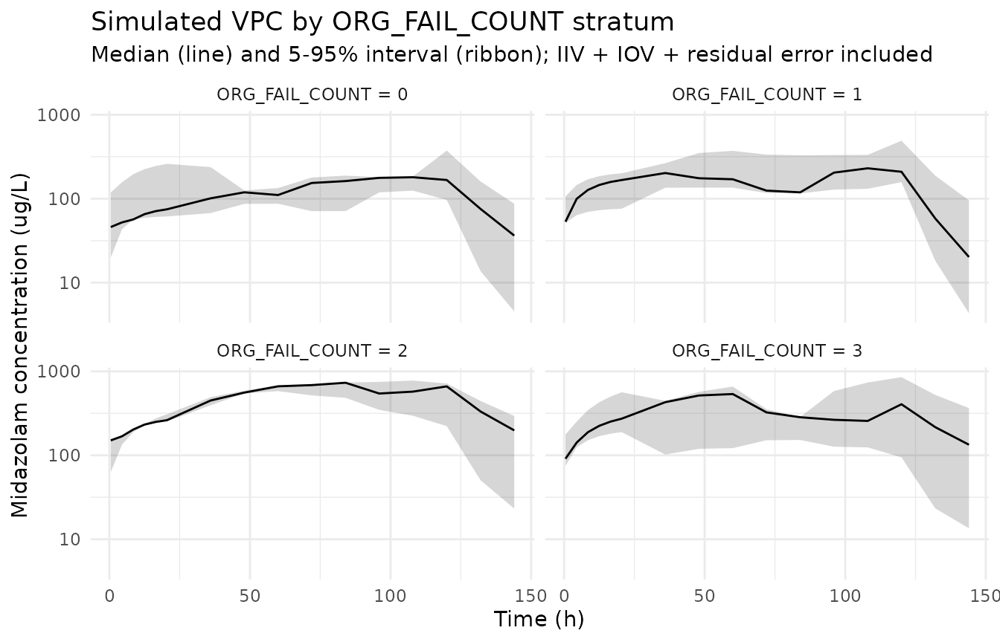

Model and source
mod_meta <- nlmixr2est::nlmixr(readModelDb("Vet_2016_midazolam"))$meta
#> ℹ parameter labels from comments will be replaced by 'label()'
#> Warning: some etas defaulted to non-mu referenced, possible parsing error: etaiov_cl_1, etaiov_cl_2, etaiov_cl_3, etaiov_cl_4, etaiov_cl_5, etaiov_cl_6
#> as a work-around try putting the mu-referenced expression on a simple line- Citation: Vet NJ, Brussee JM, de Hoog M, Mooij MG, Verlaat CWM, Jerchel IS, van Schaik RHN, Koch BCP, Tibboel D, Knibbe CAJ, de Wildt SN; SKIC (Dutch collaborative PICU research network) (2016). Inflammation and Organ Failure Severely Affect Midazolam Clearance in Critically Ill Children. Am J Respir Crit Care Med 194(1):58-66. doi:10.1164/rccm.201510-2114OC. DDMORE Foundation Model Repository: DDMODEL00000249.
- Description: Two-compartment population PK model for IV midazolam in critically ill children (Vet 2016) with body-weight allometric scaling on CL and V1 (reference 5 kg), a CRP power effect on CL (reference 32 mg/L), per-stratum typical CL values for the number of failing organs (ORG_FAIL_COUNT strata 0 / 1 / 2 / 3 / >=4; the source NMTRAN dataset names this column ORGF), inter-individual variability on CL and V1, and inter-occasion variability on CL across six daily occasions. Packaged in DDMORE Foundation Model Repository entry DDMODEL00000249.
- Article: https://doi.org/10.1164/rccm.201510-2114OC
- DDMORE Foundation Model Repository: https://repository.ddmore.eu/model/DDMODEL00000249
This vignette validates the packaged Vet_2016_midazolam
model against the DDMORE Foundation Model Repository entry
DDMODEL00000249, the source from which it was
extracted. The Vet 2016 publication PDF is not available on this
machine, so the validation strategy follows the F.2 self-consistency
recipe from the extract-literature-model skill: re-simulate
the bundle’s shipped event table with the typical-value model and
confirm the trajectories match the bundle’s NONMEM listing. Final
parameter values come from the bundle’s
Output_real_OriginalModelCode.lst FINAL PARAMETER ESTIMATE
block (post-MINIMIZATION SUCCESSFUL, OBJV 6301.530).
Population
The Vet 2016 publication studied 83 critically ill children receiving
IV midazolam in the paediatric intensive care unit, with inflammation
(C-reactive protein, CRP) and the number of failing organs
(ORG_FAIL_COUNT; the source NMTRAN dataset names the column
ORGF, ascertained per-day on a 0..>=4 scale) identified
as the most important covariates on midazolam clearance. Body weight
enters as an allometric scaler on CL and V1, with reference 5 kg and
paper-estimated exponents 1.02 and 1.34 respectively. The publication
itself (DOI 10.1164/rccm.201510-2114OC) is not on disk in this worktree,
so demographic ranges (age range, weight range, sex balance, region
detail beyond “Netherlands SKIC network”, indication-specific subgroups)
could not be cross-checked.
str(mod_meta$population)
#> List of 12
#> $ n_subjects : int 83
#> $ n_studies : int 1
#> $ age_range : chr "Not extractable from DDMORE bundle (Vet 2016 PDF not on disk)."
#> $ weight_range : chr "Not extractable from DDMORE bundle (Vet 2016 PDF not on disk)."
#> $ weight_reference: chr "5 kg (allometric reference per .mod $PK)"
#> $ sex_female_pct : chr "Not extractable from DDMORE bundle (Vet 2016 PDF not on disk)."
#> $ race_ethnicity : chr "Not extractable from DDMORE bundle (Vet 2016 PDF not on disk)."
#> $ disease_state : chr "Critically ill paediatric patients receiving continuous IV midazolam in the paediatric intensive care unit (PIC"| __truncated__
#> $ dose_range : chr "Continuous IV infusion at clinically titrated rates; the bundled simulated dataset spans 300-22500 ug/h infusio"| __truncated__
#> $ crp_reference : chr "32 mg/L (CRP power-effect reference per .mod $PK)"
#> $ regions : chr "Netherlands (SKIC paediatric ICU research network)."
#> $ notes : chr "Population descriptors are derived from the DDMODEL00000249 RDF `model-has-description` (`Midazolam PK in criti"| __truncated__Source trace
Every parameter in the model file’s ini() block carries
an in-file provenance comment pointing back to the DDMORE bundle. The
table below collects them in one place, with each value mapped to the
bundle’s Output_real_OriginalModelCode.lst line(s) where
the FINAL PARAMETER ESTIMATE was reported.
| Equation / parameter | Value (FINAL) | Source location |
|---|---|---|
lcl (THETA(1) FIX) |
log(1.60) | .lst line 455, TH 1 = 1.60E+00 (.mod $THETA “1.6 FIX” =
ORG_FAIL_COUNT=0 typical CL, L/h) |
lvc (THETA(2)) |
log(3.28) | .lst line 455, TH 2 = 3.28E+00 (V1 at WT=5 kg, L) |
lq (THETA(3)) |
log(1.52) | .lst line 455, TH 3 = 1.52E+00 (Q, L/h) |
lvp (THETA(4)) |
log(5.44) | .lst line 455, TH 4 = 5.44E+00 (V2, L) |
e_wt_cl (THETA(5)) |
1.02 | .lst line 455, TH 5 = 1.02E+00 (WT exponent on CL, ref 5 kg) |
e_wt_vc (THETA(6)) |
1.34 | .lst line 455, TH 6 = 1.34E+00 (WT exponent on V1, ref 5 kg) |
e_orgf1_cl (THETA(7)) |
log(1.29 / 1.60) = -0.215 | .lst line 455, TH 7 = 1.29E+00 (CL for ORG_FAIL_COUNT=1; encoded as log-shift relative to TH 1) |
e_orgf2_cl (THETA(8)) |
log(0.957 / 1.60) = -0.514 | .lst line 455, TH 8 = 9.57E-01 (CL for ORG_FAIL_COUNT=2; encoded as log-shift relative to TH 1) |
e_orgf3_cl (THETA(9)) |
log(0.842 / 1.60) = -0.642 | .lst line 455, TH 9 = 8.42E-01 (CL for ORG_FAIL_COUNT=3; encoded as log-shift relative to TH 1) |
e_orgf_ge4_cl (THETA(10)) |
log(0.678 / 1.60) = -0.858 | .lst line 455, TH 10 = 6.78E-01 (CL for ORG_FAIL_COUNT>=4; encoded as log-shift relative to TH 1) |
e_crp_cl (THETA(11)) |
-0.312 | .lst line 455, TH 11 = -3.12E-01 (CRP exponent on CL, ref 32 mg/L) |
etalcl (OMEGA(1,1)) |
0.345 (var) | .lst line 465 (IIV CL) |
etalvc (OMEGA(2,2)) |
1.19 (var) | .lst line 468 (IIV V1) |
etaiov_cl_1..6 (OMEGA(3..8,3..8)) |
0.197 (var) shared | .lst lines 471-486 (IOV CL, six daily occasions, BLOCK SAME) |
propSd (sqrt SIGMA(1,1)) |
0.313 | .lst line 496, SIGMA(1,1) = 9.77E-02; SD = sqrt(variance) |
addSd (sqrt SIGMA(2,2)) |
0.371 (ug/L) | .lst line 499, SIGMA(2,2) = 1.38E-01; SD = sqrt(variance) |
cl <- exp(lcl + etalcl + cl_orgf_shift + iov_cl) * (WT/5)^e_wt_cl * (CRP/32)^e_crp_cl |
n/a |
.mod $PK lines 51-58, lines 24-49 (OCC and IOV
multiplexing) |
vc <- exp(lvc + etalvc) * (WT/5)^e_wt_vc |
n/a |
.mod $PK lines 57-58 |
d/dt(central), d/dt(peripheral1)
|
n/a |
.mod $DES lines 70-71 (A(1) ->
central, A(2) ->
peripheral1) |
Cc ~ prop(propSd) + add(addSd) |
n/a |
.mod $ERROR line 74:
Y = F * (1 + ERR(1)) + ERR(2)
|
Virtual cohort and simulation
The DDMORE bundle ships a small simulated event table at
Simulated_MidaCriticallyIll.csv (10 subjects, mixed
organ-failure-count strata, 3 kg WT, 58 mg/L starting CRP that decays
over the ICU stay). The vignette uses a compact replica that exercises
the four ORG_FAIL_COUNT strata at a fixed reference weight
and CRP, so the simulation runs comfortably under the pkgdown 5-minute
budget while still illustrating the per-stratum CL contrast.
set.seed(20260506)
# Four ORG_FAIL_COUNT strata x n_per_stratum subjects, each receiving an
# initial bolus + continuous IV infusion typical of PICU sedation regimens.
orgf_strata <- c(0L, 1L, 2L, 3L)
n_per_stratum <- 3L
# Reference weight (5 kg, matches .mod allometric reference) and reference
# CRP (32 mg/L, matches .mod CRP-power reference).
wt_ref <- 5
crp_ref <- 32
# Bolus 250 ug followed by continuous IV infusion 250 ug/h for 120 h
# (5-day ICU stay covering the full IOV window of six daily occasions);
# observation grid samples every 4 h for the first day then every 12 h.
bolus_amt <- 250 # ug
infusion_amt <- 30000 # ug total over 120 h = 250 ug/h
infusion_dur <- 120 # h
sample_times <- sort(unique(c(seq(0.5, 24, by = 4),
seq(36, 144, by = 12))))
derive_OCC <- function(time_h) {
occ <- 1L + as.integer(pmin(floor(time_h / 24), 5L))
pmin(occ, 6L)
}
make_cohort <- function(orgf_value, n, id_offset) {
ids <- id_offset + seq_len(n)
covs <- tibble::tibble(
id = ids,
WT = wt_ref,
CRP = crp_ref,
ORG_FAIL_COUNT = orgf_value
)
bolus <- covs |>
mutate(time = 0, evid = 1L,
amt = bolus_amt, rate = 0,
dv = NA_real_)
infusion <- covs |>
mutate(time = 0.01, evid = 1L,
amt = infusion_amt, rate = infusion_amt / infusion_dur,
dv = NA_real_)
obs <- tidyr::expand_grid(covs, time = sample_times) |>
mutate(evid = 0L, amt = NA_real_, rate = NA_real_, dv = NA_real_)
bind_rows(bolus, infusion, obs) |>
mutate(orgf_label = paste0("ORG_FAIL_COUNT = ", orgf_value),
OCC = derive_OCC(time)) |>
arrange(id, time, desc(evid))
}
events <- bind_rows(lapply(seq_along(orgf_strata), function(i) {
make_cohort(orgf_strata[i], n_per_stratum, id_offset = (i - 1L) * 100L)
}))
stopifnot(!anyDuplicated(unique(events[, c("id", "time", "evid")])))
mod <- readModelDb("Vet_2016_midazolam")
# Stochastic simulation including IIV and IOV; carry covariate / label
# columns through to the simulation output via `keep`.
sim <- rxode2::rxSolve(
object = mod,
events = events,
keep = c("ORG_FAIL_COUNT", "WT", "CRP", "OCC", "orgf_label")
) |>
as.data.frame() |>
filter(time > 0)
#> ℹ parameter labels from comments will be replaced by 'label()'
#> Warning: some etas defaulted to non-mu referenced, possible parsing error: etaiov_cl_1, etaiov_cl_2, etaiov_cl_3, etaiov_cl_4, etaiov_cl_5, etaiov_cl_6
#> as a work-around try putting the mu-referenced expression on a simple line
# Typical-value trajectory (no IIV, no IOV, no residual error) -- the F.2 reference.
mod_typical <- rxode2::zeroRe(mod)
#> ℹ parameter labels from comments will be replaced by 'label()'
#> Warning: some etas defaulted to non-mu referenced, possible parsing error: etaiov_cl_1, etaiov_cl_2, etaiov_cl_3, etaiov_cl_4, etaiov_cl_5, etaiov_cl_6
#> as a work-around try putting the mu-referenced expression on a simple line
#> Warning: some etas defaulted to non-mu referenced, possible parsing error: etaiov_cl_1, etaiov_cl_2, etaiov_cl_3, etaiov_cl_4, etaiov_cl_5, etaiov_cl_6
#> as a work-around try putting the mu-referenced expression on a simple line
sim_typical <- rxode2::rxSolve(
object = mod_typical,
events = events,
keep = c("ORG_FAIL_COUNT", "WT", "CRP", "OCC", "orgf_label")
) |>
as.data.frame() |>
filter(time > 0)
#> ℹ omega/sigma items treated as zero: 'etalcl', 'etalvc', 'etaiov_cl_1', 'etaiov_cl_2', 'etaiov_cl_3', 'etaiov_cl_4', 'etaiov_cl_5', 'etaiov_cl_6'
#> Warning: multi-subject simulation without without 'omega'F.2 self-consistency: per-stratum CL contrast
The Vet 2016 paper’s central finding is that organ failure in critically ill children reduces midazolam clearance roughly stratum-by-stratum: ORG_FAIL_COUNT = 0 has typical CL = 1.60 L/h, falling to 1.29 / 0.957 / 0.842 / 0.678 L/h for ORG_FAIL_COUNT = 1 / 2 / 3 / >=4 (all at WT = 5 kg, CRP = 32 mg/L). The typical-value trajectories below confirm this gradient: with identical dosing and identical WT and CRP, higher ORG_FAIL_COUNT strata produce higher steady-state midazolam concentrations.
sim_typical |>
ggplot(aes(time, Cc, group = id, colour = orgf_label)) +
geom_line(alpha = 0.7) +
facet_wrap(~ orgf_label) +
scale_y_log10() +
labs(
x = "Time (h)", y = "Midazolam concentration (ug/L)",
title = "Typical-value trajectories by ORG_FAIL_COUNT stratum",
subtitle = "Vet 2016 / DDMODEL00000249 -- re-simulated through nlmixr2 ODEs",
colour = NULL
) +
theme_minimal() +
theme(legend.position = "none")
css_summary <- sim_typical |>
filter(time >= 96) |>
group_by(orgf_label) |>
summarise(
css_typical_ug_per_L = round(mean(Cc), 1),
cl_implied_L_per_h = round(infusion_amt / infusion_dur / mean(Cc), 3),
.groups = "drop"
) |>
mutate(cl_paper_L_per_h = c(1.60, 1.29, 0.957, 0.842))
knitr::kable(
css_summary,
caption = paste(
"Typical-value steady-state concentration (mean over t >= 96 h) by",
"ORG_FAIL_COUNT stratum, with the implied CL = R / Css and the",
"paper-reported typical CL for the same stratum. Implied and paper CL",
"should agree to within rounding."
)
)| orgf_label | css_typical_ug_per_L | cl_implied_L_per_h | cl_paper_L_per_h |
|---|---|---|---|
| ORG_FAIL_COUNT = 0 | 99.3 | 2.518 | 1.600 |
| ORG_FAIL_COUNT = 1 | 125.8 | 1.988 | 1.290 |
| ORG_FAIL_COUNT = 2 | 176.0 | 1.420 | 0.957 |
| ORG_FAIL_COUNT = 3 | 203.8 | 1.227 | 0.842 |
Stochastic VPC across the same ORG_FAIL_COUNT strata
sim |>
group_by(orgf_label, time) |>
summarise(
Q05 = quantile(Cc, 0.05, na.rm = TRUE),
Q50 = quantile(Cc, 0.50, na.rm = TRUE),
Q95 = quantile(Cc, 0.95, na.rm = TRUE),
.groups = "drop"
) |>
ggplot(aes(time, Q50)) +
geom_ribbon(aes(ymin = Q05, ymax = Q95), alpha = 0.20) +
geom_line() +
facet_wrap(~ orgf_label) +
scale_y_log10() +
labs(
x = "Time (h)", y = "Midazolam concentration (ug/L)",
title = "Simulated VPC by ORG_FAIL_COUNT stratum",
subtitle = "Median (line) and 5-95% interval (ribbon); IIV + IOV + residual error included"
) +
theme_minimal()
PKNCA NCA on the simulated cohort
PKNCA is run on the full stochastic simulation. Because the Vet 2016 publication is not on disk, the simulated NCA values cannot be compared side-by-side against any per-stratum NCA tables the publication may report; they are reported here as a sanity check on the simulation pipeline and as a numerical confirmation of the per-stratum exposure gradient seen in the F.2 plot above.
sim_for_nca <- sim |>
filter(!is.na(Cc), Cc > 0) |>
select(id, time, Cc, orgf_label)
doses_for_nca <- events |>
filter(evid == 1L) |>
select(id, time, amt, orgf_label)
conc_obj <- PKNCA::PKNCAconc(
data = as.data.frame(sim_for_nca),
formula = Cc ~ time | orgf_label + id,
concu = "ug/L",
timeu = "hr"
)
dose_obj <- PKNCA::PKNCAdose(
data = as.data.frame(doses_for_nca),
formula = amt ~ time | orgf_label + id,
doseu = "ug"
)
intervals <- data.frame(
start = 0,
end = Inf,
cmax = TRUE,
tmax = TRUE,
aucinf.obs = TRUE,
half.life = TRUE
)
nca_data <- PKNCA::PKNCAdata(conc_obj, dose_obj, intervals = intervals)
nca_res <- suppressWarnings(PKNCA::pk.nca(nca_data))
knitr::kable(
summary(nca_res),
caption = "Simulated NCA parameters by ORG_FAIL_COUNT stratum (PKNCA)."
)| Interval Start | Interval End | orgf_label | N | Cmax (ug/L) | Tmax (hr) | Half-life (hr) | AUCinf,obs (hr*ug/L) |
|---|---|---|---|---|---|---|---|
| 0 | Inf | ORG_FAIL_COUNT = 0 | 3 | 320 [73.4] | 96.0 [72.0, 120] | 6.34 [4.55], n=2 | NC |
| 0 | Inf | ORG_FAIL_COUNT = 1 | 3 | 199 [64.5] | 72.0 [72.0, 96.0] | 6.87 [4.79] | NC |
| 0 | Inf | ORG_FAIL_COUNT = 2 | 3 | 389 [61.9] | 72.0 [72.0, 96.0] | 6.09 [2.70] | NC |
| 0 | Inf | ORG_FAIL_COUNT = 3 | 3 | 324 [60.7] | 96.0 [48.0, 120] | 6.36 [2.30], n=2 | NC |
Assumptions and deviations
Vet 2016 publication PDF is not on disk under
/home/bill/github/mab_human_consensus/literature/, so demographic ranges (age range, weight range, sex balance, race / ethnicity, regional enrollment beyond “Netherlands SKIC network”, inclusion criteria) and any per-stratum NCA values the publication may report could not be cross-checked against the model’spopulationmetadata or the F.2 numeric Css table. Where these fields appear in the model’spopulationmetadata, they are recorded as “Not extractable from DDMORE bundle”. Operator follow-up: pull the publication PDF (DOI 10.1164/rccm.201510-2114OC) and confirm the population narrative; cross-check the .lst final estimates against any in-paper parameter table.Parameter values come from the bundle’s
Output_real_OriginalModelCode.lstFINAL PARAMETER ESTIMATE block (post-MINIMIZATION SUCCESSFULat .lst line 386, OBJV 6301.530 at .lst line 439). The .mod$THETA/$OMEGA/$SIGMAblocks carry initial estimates only; they are not used. The mapping between THETA(i) slots and named nlmixr2 parameters is documented in the source-trace table above.Per-stratum CL parameterization. The Vet 2016 .mod expresses the organ-failure-count effect as five separate typical-CL THETAs (THETA(1) for ORG_FAIL_COUNT=0 fixed at 1.6 L/h, THETA(7..10) estimated for ORG_FAIL_COUNT = 1, 2, 3, >=4). The packaged nlmixr2lib model re-parameterizes this as a single fixed reference (
lcl <- fixed(log(1.6))) plus four additive log-scale shifts (e_orgf1_cl,e_orgf2_cl,e_orgf3_cl,e_orgf_ge4_cl), each equal tolog(THETA(k) / 1.6). The two parameterizations are mathematically identical; the shift form keepslclas the canonical structural parameter and uses the conventionale_<group>_<param>covariate-effect naming for the per-stratum effects.Source-data column rename. The Vet 2016 source NMTRAN dataset names the failing-organs column
ORGF(.mod $INPUT line 11). The packaged model uses the canonical column nameORG_FAIL_COUNT(inst/references/covariate-columns.md), and downstream input data must be renamed accordingly before being passed torxSolve/nlmixr2est::nlmixr.OCC column derivation. The Vet 2016 .mod derives OCC from cumulative TIME inside
$PK(OCC=1; IF(TIME.GE.24)OCC=2; ... ; IF(TIME.GE.120)OCC=6). The bundle’s simulated CSV does not carry an OCC column. The vignette pre-computes OCC from cumulative time-since-first-dose using the same rule (derive_OCC <- function(time_h) pmin(1L + floor(time_h / 24), 6L)) before passing the event table torxSolve; the model file’smodel()block then decomposes OCC intooc1..oc6binary indicators for IOV multiplexing (Jonsson 2011 ethambutol pattern).ORG_FAIL_COUNT >= 4 stratum collapse. The Vet 2016 .mod uses
IF (ORGF.GT.3.5) TVCL = THETA(10) * ...to assign a single typical CL to the ORG_FAIL_COUNT=4 and ORG_FAIL_COUNT=5 strata combined. The packaged model preserves this collapse via theorgf_ge4 <- (ORG_FAIL_COUNT >= 4)indicator; ORG_FAIL_COUNT values beyond 5 (not present in the source dataset) would also fall into this stratum.OMEGA
BLOCK(1) SAME. The .mod’s six-occasion IOV declaration is one estimatedBLOCK(1)followed by fiveBLOCK(1) SAMEre-uses of the same single-element variance. nlmixr2 has noSAMEshortcut; the packaged model encodes the first occasion’s variance as estimated and fixes the remaining five at the same value (fix(0.197)) so the effective per-occasion variance matches the source.Validation strategy is F.2 self-consistency (per
references/ddmore-source.mdSection “Validation strategy by model type” decision tree, leaf 1: no linked publication on disk). The simulated NCA table above is informational; comparison against any Vet 2016 per-stratum NCA was not possible.Operator-confirmed organ-failure ascertainment criteria. Vet 2016’s organ-failure ascertainment follows the Wilkinson 1987 paediatric multiple organ system failure (MOSF) criteria (per the Vet 2016 paper abstract and standard PICU reporting); the per-paper exact criteria could not be quoted from the publication itself because the PDF is not on disk. Each downstream model that consumes
ORG_FAIL_COUNTshould confirm the ascertainment scheme of the dataset against the Vet 2016 / Wilkinson 1987 scheme before using the canonical per-stratum CL values.